فصل ۲ : مثلثات
الَّشْمُسَ واْلَقَمُرِ بُحْسَباٍن (الرحٰمن:5)
خورشید و ماه برابر حساب (منظمی در چرخش و گردش) هستند.
فصل یا موسم یکی از تقسیمات سال بر اساس تغییرات آب و هوایی کره زمین است. به علت مایل بودن محور گردش زمین به دور خورشید نسبت به صفحهٔ استوا و در نتیجه تغییر طول روز و شدت تابش و دما، فصلها پدید میآیند.
درس اول : نسبت های مثلثاتی
مثلثات شاخهای از ریاضیات است که به بررسی روابط بین زوایا و اضلاع یک مثلث میپردازد. یکی از اهداف این علم، اندازهگیری فاصلهها بهصورت غیرمستقیم است. مثلثات در علوم مهندسی، فیزیک، نقشهبرداری، دریانوردی، نجوم و غیره کاربرد دارد. بهعنوان مثال، فرض کنید یک هواپیما در ارتفاع ۲ کیلومتری از سطح زمین در حال فرود آمدن است.
اگر زاویهٔ هواپیما با افق ۱۳° باشد، میخواهیم محل دقیق فرود هواپیما را بدانیم. این مسئله و مسائلی نظیر این با استفاده از روابط مثلثاتی حل میشوند.
برای معرفی مفهوم مثلثات، به مفهوم تشابه نیاز داریم. در پایه نهم، با این مفهوم آشنا شدید و دیدید که دو مثلث با هم متشابهاند، هرگاه زاویههای نظیر در آنها برابر و نسبت اضلاع متناظر نیز با هم برابر باشند. یعنی اگر $ A \overset{\triangle}{B} C \sim A' \overset{\triangle}{B'} C' $، آنگاه داریم:
\[ \frac{AB}{A'B'} = \frac{BC}{B'C'} = \frac{AC}{A'C'} \quad \text{و} \quad \hat{A} = \hat{A'}, \hat{B} = \hat{B'}, \hat{C} = \hat{C'} \]
در هندسه ثابت میشود:
هرگاه دو زاویه از مثلثی، با دو زاویه از مثلثی دیگر برابر باشند، آن دو مثلث، متشابهاند.
به عنوان یک نتیجه از مطلب بالا میتوان دید:
برای اینکه اتومبیلها در پیچ جادهها بتوانند بدون خطر انحراف، حرکت کنند، در جاده شیب عرضی ایجاد میکنند، یعنی آن را طوری میسازند که قسمت بیرونی جاده نسبت به قسمت درونی، مرتفعتر باشد.
در صفحات گرافن، هر اتم کربن با سه اتم کربن دیگر پیوند دارد که زوایای بین این پیوندها ۱۲۰ درجه است. در آیندهای نهچندان دور، بهترین میکروفنهای جهان با استفاده از گرافن ساخته میشوند. این میکروفنها، قابلیت ردیابی امواج صوتی فراتر از دامنهٔ شدت شنوایی انسان را دارند.
۱) در مثلثهای قائمالزاویهٔ ABC و $A'B'C'$، جایهای خالی را کامل کنید. $\hat{A} = \hat{A'}$
$$ ABC \ \ \square A'B'C' \ \ \Rightarrow \frac{AC}{A'C'} = \frac{AB}{\qquad \qquad} = \frac{BC}{\qquad \qquad} $$
۲) از تساوی $\frac{AC}{A'C'} = \frac{AB}{A'B'}$، میتوان نتیجه گرفت $\frac{AB}{AC} = \frac{A'B'}{A'C'}$ (چرا؟). با توجه به این نکته، جایهای خالی را کامل کنید:
$$ \frac{AB}{BC} = \frac{\qquad}{\qquad} \quad \text{و} \quad \frac{BC}{AC} = \frac{\qquad}{\qquad} $$
نتیجه: اگر زاویه $A$ از مثلث قائمالزاویه $ABC$ با زاویه $A'$ از مثلث قائمالزاویه $A'B'C'$ (مطابق شکل بالا) برابر باشد، داریم:
$$ \frac{BC}{AC} = \frac{B'C'}{A'C'} \quad \text{و} \quad \frac{AB}{BC} = \frac{A'B'}{B'C'} \quad \text{و} \quad \frac{AB}{AC} = \frac{A'B'}{A'C'} $$
۱) در شکل سمت راست، درستی تساوی $ \frac{BC}{AB} = \frac{EF}{AE} $ را بررسی کنید.
۲) نقطهٔ دیگری مثل $M$ را در امتداد $AC$ درنظر بگیرید و از آن نقطه، عمودی بر ضلع دیگر زاویه $A$ رسم کنید و پای عمود را $N$ بنامید. اکنون جایهای خالی را کامل کنید:
$$ \frac{BC}{AB} = \frac{MN}{. . . .} = \frac{. . . .}{AE} $$
همانطور که در «کار در کلاس» بالا دیدیم، در مثلث قائمالزاویه $ABC$ برای زاویهٔ معین و حاده $A$، نسبت طول ضلع مقابل زاویهٔ $A$، به طول ضلع مجاور آن همواره مقداری ثابت است. این نسبت را تانژانت زاویهٔ $A$ مینامیم و آن را با $\tan A$ نشان میدهیم. به عبارت دیگر، در مثلث قائمالزاویهٔ دلخواه $ABC$، داریم:
$$ \tan A = \frac{ A \ \ \text{طول ضلع مقابل به زاویهٔ } }{ A \ \ \text{طول ضلع مجاور به زاویهٔ } } = \frac{BC}{AB} $$
عکس تانژانت زاویه $A$ را کتانژانت مینامیم و آن را با $\cot A$ نشان میدهیم. به عبارت دیگر، در مثلث قائمالزاویه $ABC$ داریم:
$$ \cot A = \frac{A \ \ \text{طول ضلع مجاور به زاویه } }{ A \ \ \text{طول ضلع مقابل به زاویه } } = \frac{AB}{BC} $$
۱) در هر یک از شکلهای زیر، جایهای خالی را کامل کنید.
$ \tan A = \frac{BC}{AB} = \frac{5}{3} $
$ \cot M = \frac{MN}{NO} = \frac{. . . .}{2/5} $
$ \tan F = \frac{\qquad}{\qquad} = \frac{\qquad}{\qquad} $
$ \cot A = \frac{\qquad}{\qquad} = \frac{\qquad}{\qquad} $
$ \tan M = \frac{\qquad}{\qquad} = \frac{\qquad}{\qquad} $
$ \cot F = \frac{\qquad}{\qquad} = \frac{\qquad}{\qquad} $
۲) مثلث متساویالاضلاع $ABC$ با اضلاعی به طول ۲ واحد را درنظر بگیرید.
(الف) محل برخورد نیمساز زاویه $A$ با پارهخط $BC$ را $M$ بنامید. با توجه به خواص مثلث متساویالساقین، $AM = \frac{\qquad}{\qquad}$ و ضلع $BC = \frac{\qquad}{\qquad} $ . بنابراین $BM = MC = \frac{\qquad}{\qquad}$ .
(ب) با استفاده از رابطه فیثاغورس، طول $AM$ و حاصل کسرهای زیر را بهدست آورید.
$$ \tan 30^0 = \frac{BM}{AM} = \frac{\qquad}{\qquad} \quad , \quad \tan 60^0 = \frac{AM}{BM} = \frac{\qquad}{\qquad} $$
(پ) با استفاده از یک مثلث قائمالزاویهٔ متساویالساقین، تانژانت و کتانژانت زاویهٔ ۴۵ درجه را پیدا کنید.
در هر مثلث قائمالزاویه $ABC$، نسبت طول ضلع مقابل زاویهٔ حاده $A$ به طول وتر، همواره مقداری ثابت است که آن را سینوس زاویهٔ $A$ مینامیم و با $\sin A$ نشان میدهیم. به عبارت دیگر:
$$ \sin A = \frac{BC}{AC} $$
همچنین نسبت طول ضلع مجاور زاویهٔ حاده $A$ به طول وتر نیز مقداری ثابت است که آن را کسینوس زاویهٔ $A$ مینامیم و آن را با $\cos A$ نشان میدهیم. به عبارت دیگر:
$$ \cos A = \frac{\qquad}{\qquad} $$
به سادگی میتوان دید، در مثلث قائمالزاویه $ABC$: $$ \tan A = \frac{BC}{AB} = \frac{\frac{BC}{AC}}{\frac{AB}{AC}} $$ و از این رو: $$ \tan A = \frac{sin A}{ \cos A} $$ به طور مشابه می توان دید: $$ \cot A = \frac{ \cos A}{ \sin A} $$
در یک مثلث قائمالزاویه، نسبتهای سینوس، کسینوس، تانژانت و کتانژانت را نسبتهای مثلثاتی مینامیم.
مثال
خانم جلالی از دانشآموزان خواست تا نسبتهای مثلثاتی زاویهٔ $45^0$ را حساب کنند. او ابتدا یک مربع با اضلاعی به طول ۱ واحد رسم کرد و از دانشآموزان خواست تا قطر $AC$ را رسم کرده و سپس طول آن را حساب کنند.
فریبا: با توجه به اینکه مثلث $ADC$ قائمالزاویه است، داریم $ (AD)^2 + (DC)^2 = (AC)^2 $.
در نتیجه $ \sqrt{(AC)^2 = 1^2 + 1^2 = 2} $. چون اندازه قطر همواره عددی مثبت است، پس داریم: $ AC = \sqrt{2} $
معلم: با توجه به اینکه مثلث $ADC$ متساویالساقین است، از این رو $\hat{A_1} = \hat{C_1} = \ \ . . . .$ .
$$ \cos A_1 = \cos 45^0 = \frac{. . . .}{. . . .} = \frac{ . . . .}{. . . .} = \frac{. . . .}{. . . .} $$
مبینا: طبق تعریف سینوس، $$ \sin A_1 = \sin 45^0 = \frac{DC}{\text{وتر}} = \frac{1}{\sqrt{2}} = \frac{\qquad}{2} $$
سبا: من هم میتوانم با توجه به روابط بالا کسینوس $45^0$ را پیدا کنم.
مریم: اکنون در مثلث قائمالزاویهٔ $ADC$، طبق تعریف داریم:
$$ \tan A_1 = \tan 45^0 = \frac{1}{1} = 1 \quad \\ \text{و} \\ \quad \cot A_1 = \cot 45^0 = \frac{1}{1} = 1 $$
به کمک شکل فعالیت قبل، با پیدا کردن نسبتهای مثلثاتی زاویههای $30^0$، $45^0$ و $60^0$، جدول زیر را کامل کنید (در صورت لزوم، کسرها را گویا کنید).
| مقدار | $30^0$ | $45^0$ | $60^0$ |
|---|---|---|---|
| sinA | $ \frac{\sqrt{2}}{2}$ | ||
| cosA | $\frac{\sqrt{2}}{2}$ | ||
| tanA | $\frac{\sqrt{3}}{3}$ | $1$ | $ \sqrt{3} $ |
| cotA | $$\sqrt{3} $$ | $1$ | $\frac{\sqrt{3}}{3}$ |
یک موشک در ارتفاع ۱۵ متری از سطح زمین و با زاویهٔ $30^0$ پرتاب میشود. میخواهیم بدانیم پس از طی ۲۰۰۰ متر با همین زاویه، موشک به چه ارتفاعی از سطح زمین میرسد؟
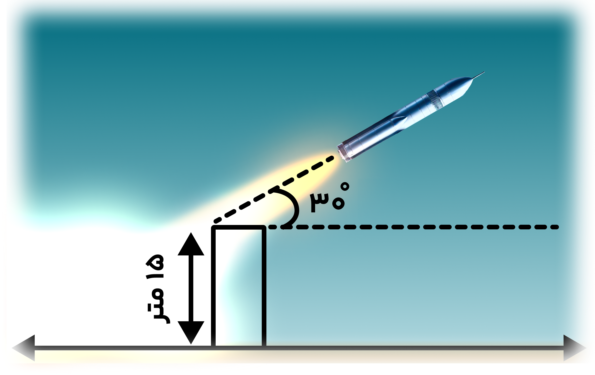حل: ابتدا یک مدل ریاضی برای حل این مسئله میسازیم. با توجه به شکل زیر، بهسادگی میتوان دید، ارتفاع موشک از سطح زمین برابر است با:
$$ BC + MC = BC + . . . . $$
بنابراین کافی است طول $BC$ را پیدا کنیم. میدانیم $ \sin 30^0 = \frac{1}{2} $، پس در مثلث قائمالزاویه $ABC$ داریم:
$$ \sin 30^0 = \frac{1}{2} = \frac{BC}{\qquad } \Rightarrow BC = $$
ارتفاع موشک= $ \ \ . . . . \ \ + \ \ . . . . \ \ = \ \ . . . . \ \ $
۱. یک زاویهٔ $50^0$ رسم کنید. با تشکیل یک مثلث قائمالزاویه و اندازهگیری طولهای موردنظر با یک خطکش مدرج، نسبتهای مثلثاتی زاویهٔ $50^0$ را بهصورت تقریبی حساب کنید. سپس با ماشینحساب، مقادیر واقعی را بهدست آورید و با مقادیر قبل مقایسه کنید.
۲. میخواهیم مساحت مثلث $ABC$ در شکل زیر را پیدا کنیم. میدانیم:
$$ ABC = \frac{1}{2} \times \text{ارتفاع} \times \text{قاعده} \qquad \text{ مثلث مساحت }$$
(الف) با توجه به اینکه $\sin 50^0 \approx 0.76$، داریم:
$$ \sin 50^0 = \frac{AH}{\text{وتر}} = \frac{AH}{ \ \ . . . . \ \ } \Rightarrow AH \approx \ \ . . . . $$
(ب) با توجه به قسمت (الف) داریم:
$$ \begin{align*} ABC & = \frac{1}{2} \times AH \times BC \qquad \text{مساحت مثلث } \\ \\ & = \frac{1}{2} \times \ \ . . . . \ \ \times \ \ . . . . \ \ \approx \ \ . . . . \end{align*} $$
۳. در هر مثلث، با معلوم بودن مقادیر طول دو ضلع مثلث و اندازه زاویه بین آنها نشان دهید:
$$ A \overset{\triangle}{B} C \text{مساحت } = \frac{1}{2} \times AB \times BC \times \sin B $$
۱. در راهپیمایی ۲۲ بهمن، یک بالن اطلاعرسانی توسط دو طناب به زمین بسته شده است. طول یکی از طنابها ۳۰ متر است. میخواهیم طول طناب دوم را پیدا کنیم.
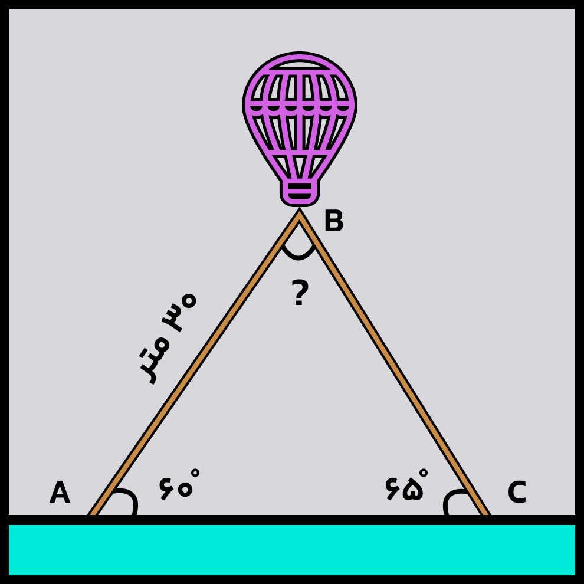(الف) ابتدا اندازهٔ زاویه $B$ را بهدست آورید. سپس ارتفاع وارد بر ضلع $AC$ را رسم کنید و آن را $BH$ بنامید.
(ب) طول $BH$ را با استفاده از سینوس زاویه $A$ بهدست آورید.
(پ) اکنون با استفاده از سینوس زاویه $65^0$، طول طناب دوم را پیدا کنید. $\sin 65^0 \approx 0.9$
۲. مطابق شکل، نردبانی به طول ۸ متر در زیر پنجرهٔ ساختمانی قرار گرفته است. اگر زاویهٔ نردبان با سطح زمین θ=۳۰° باشد، ارتفاع پنجره تا زمین را محاسبه کنید. فاصلهٔ پای نردبان تا ساختمان چقدر است؟
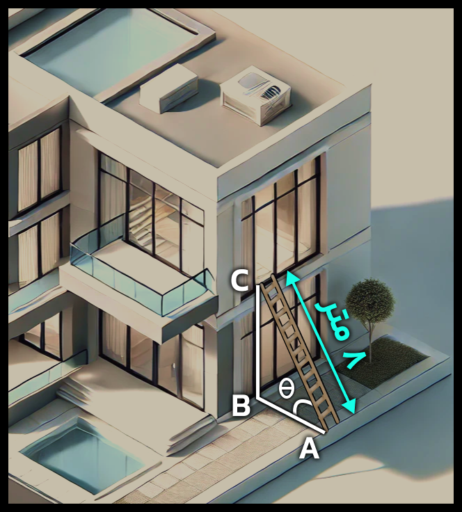$$\sin \theta = \frac{1}{2} = \frac{BC}{8} \Rightarrow 2BC = \dots \dots \Rightarrow BC = \dots \dots$$
اکنون به کمک رابطهٔ فیثاغورس داریم:
$$AB^2 = AC^2 - BC^2 = \dots \dots - \dots \dots = \dots \dots \Rightarrow AB = \dots \dots$$
۱. علی میخواهد ارتفاع یک درخت را که طول سایهٔ آن ۳ متر است، حساب کند. قد علی ۱/۵ متر و طول سایهٔ او در همان لحظه ۰/۵ متر است. ارتفاع درخت چقدر است؟
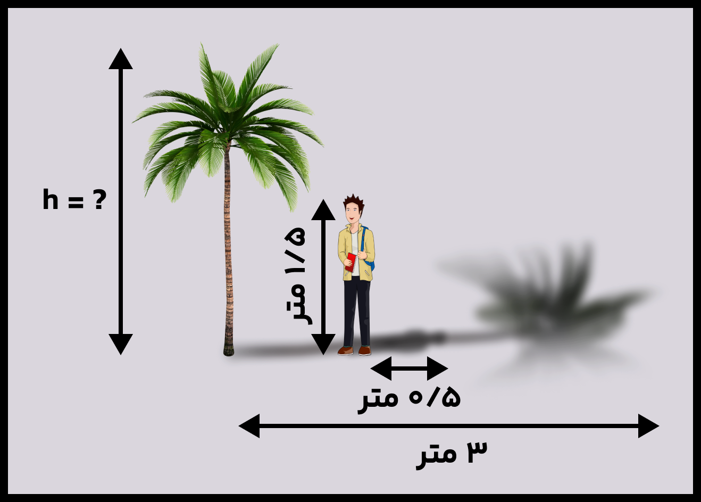۲. مساحت شش ضلعی منتظم زیر را بهدست آورید.
۳. یک هواپیما در ارتفاع ۲ کیلومتر از سطح زمین در حال فرود آمدن است. اگر زاویهٔ هواپیما با افق حدود °۱۳ باشد، هواپیما در چه فاصلهای از نقطهٔ A فرود میآید.
$$\tan 13° \approx 0.23 $$
۴. فرض کنید \( \sin 75° \approx 0.96 \). مساحت مثلث ABC در شکل زیر را بهدست آورید.
۵. مساحت مثلث ABC را پیدا کنید.